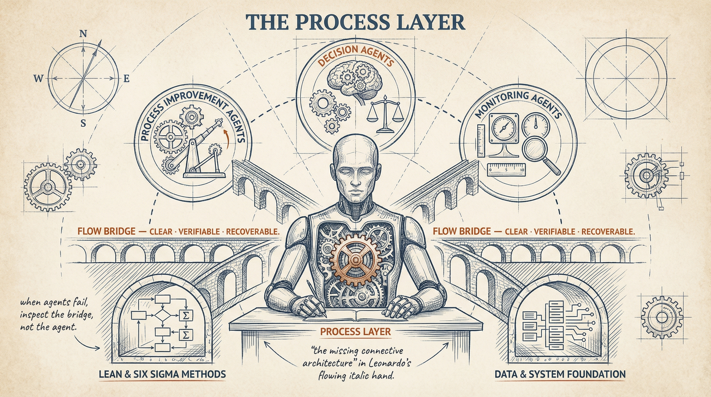
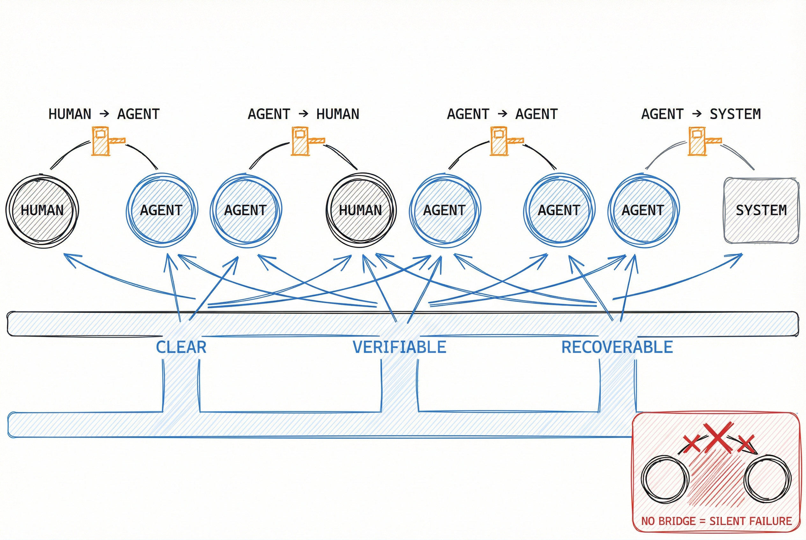

Process Architecture · AI Operations
The One Architecture Layer Lean Never Gave You — And Why Your AI Agents Keep Failing Without It
Why rigorous process shops fail at AI delegation — and the missing discipline that fixes it.

You Built Process Disciplines for Everything Except Delegation
You have a process discipline for manufacturing defects. You have a process discipline for customer experience. You have a process discipline for software delivery.
You have no process discipline for the thing that will reshape all three: handing work to AI agents.
That is the gap. Not a technology gap. Not a talent gap. A discipline gap — sitting in the one place your Lean toolkit never thought to look.
This article gives you three things:
- The name for the missing discipline and why your existing frameworks cannot cover it
- Two core tools — Flow Bridges and Drift Signals — that make human-agent collaboration reliable and improvable
- A concrete walkthrough showing how one team went from 12 to 20 deliverables per month on the same headcount, and a 10-question diagnostic so you know exactly where to start
The discipline is called Agentic Process Architecture. It is the operations manual that Lean forgot to write for the AI era.
Here is how it works.
This is for process leaders — Six Sigma Black Belts, Lean practitioners, VPs of Operations who built their credibility on methodology — who know AI should be producing real results but keep watching pilots stall, outputs drift, and agent-assisted workflows quietly degrade.
If you have struggled with:
- AI tools that work in demos but produce inconsistent results in live operations
- Trying to apply Lean or Six Sigma thinking to AI workflows and finding it does not fit
- Suspecting the problem is structural but having no name for it and no framework to present upward
Then you are in the right place. Because what becomes possible is:
- A named discipline for human-agent collaboration that extends what you already know
- A way to increase agent autonomy safely over time without increasing risk
- A framework your team can operate and your executives can understand
- The ability to diagnose exactly where your agent-assisted workflows are breaking and why
Your Process Toolkit Has a Blind Spot the Size of a Building
Every framework in your toolkit was designed before AI agents became collaborators. Full stop.
Lean reduces waste by optimizing how materials and information flow through a system. Design Thinking reduces solution risk by deeply understanding the problem before building. Both are powerful. Neither answers the question you are asking right now: what happens when you hand work to a non-human collaborator that can fail in ways no machine on your factory floor ever did?
Think of it this way. Your factory floor has safety rails, quality gates, and escalation paths for every machine. Your AI agents have... a prompt and a prayer.
The missing discipline is called Agentic Process Architecture (APA). It reduces the cost of handing work to an agent without a safety net — by designing the handshakes, guardrails, and learning loops that make human-agent collaboration reliable, improvable, and scalable.
This is not a technology decision. It is a process discipline.
Redesigning a workflow for AI delegation requires answering questions Lean never asks: Where does human judgment hand off to agent execution? What happens when the agent's output drifts off spec? How do you verify quality at handoff points without creating bottlenecks? When does the agent stop and escalate?
These are architecture questions. And they need a discipline purpose-built for the answer.
95% of AI Pilots Fail — And It Is Never the Technology
Before introducing the framework, look at what happens without it.
The failure rate is structural, not anecdotal. MIT's NANDA Initiative found that 95% of enterprise AI pilots fail to deliver measurable P&L impact. Over 80% of organizations piloted tools like ChatGPT or Copilot. The systems boosted individual productivity. They did not deliver enterprise-level value. The consistent cause was not the technology — it was the absence of process architecture around delegation.
The math is unforgiving. In multi-agent pipelines, errors compound at every transition — like a game of telephone where each whisper loses fidelity. If each agent in a three-step pipeline performs at 90% accuracy, the pipeline delivers 72.9% accuracy (0.9 × 0.9 × 0.9). Add a fourth agent and you drop to 65.6%. The risk is not in the steps. The risk is in the transitions. UC Berkeley researchers confirmed this in production: multi-agent frameworks showed failure rates up to 86.7% across real deployments.
Drift is the default state. A 2022 Gartner study found that 91% of machine learning models degrade over time as real-world data shifts away from training conditions. A bank deployed a credit risk model in January 2024 that correctly identified 95% of defaults. By September, accuracy had fallen to 87% — an 8-point drop in 8 months with no changes to the model itself. The decline was gradual, like a tire losing air. No blowout. No warning light. Just a slow fade that was only visible through monitoring. Most teams have no system for detecting it.
Optimism-based deployment has a price tag. Klarna replaced human customer service agents with AI, cutting headcount from 5,500 to under 3,000. Within six months, customer satisfaction dropped sharply, service quality became inconsistent, and the CEO acknowledged the approach "reduced the quality of the company's offerings and eroded trust with customers." Klarna began rehiring in May 2025.
Every one of these failures traces to the same root cause: no process discipline for delegation. Not bad technology. Not insufficient data. Not the wrong model.
A missing architecture layer.
So let's build it.
Why AI Agents Fail at Transitions, Not Tasks
Agentic Process Architecture rests on two tools that work as a closed loop. One designs the handshake between human and agent. The other watches for the moment that handshake stops working.
Flow Bridges — The Tollbooths on the AI Highway
A Flow Bridge is a structured transition between collaborators. Think of it as a tollbooth on a highway. You do not eliminate tollbooths — you calibrate them to the traffic. Some lanes get an EZ-Pass. Some require a full stop. The design depends on what is at stake if the wrong vehicle gets through.
There are four types of Flow Bridge:
- Human to Agent — a person hands work to an agent
- Agent to Human — an agent hands output back for review or decision
- Agent to Agent — one agent passes an artifact to another
- Agent to System — an agent interacts with a tool or database
In traditional process mapping, you model steps. In agentic process design, you model bridges. Because the risk is not in the step. The risk is in the transition.
Every strong Flow Bridge has three properties:
Clear — Inputs and outputs are explicitly defined. No ambiguity about what one party is handing to another, in what format, and with what expectations. An agent receiving a vague instruction is not crossing a bridge — it is jumping off a cliff.
Verifiable — Each bridge has validation logic matched to the stakes of getting it wrong. Low-risk transitions pass through with automated checks or sampling. High-risk transitions require structured human review against defined criteria. Verification effort matches the consequence of failure at that specific transition.
Recoverable — There is a defined rollback, retry, or escalation path. If a bridge fails, the system knows what to do next. Recovery is designed in advance, not improvised in the moment.
Without Flow Bridges, five things happen predictably. Agents overreach and produce unverified output. Humans over-review and become bottlenecks. Errors compound silently across multiple transitions. Trust collapses and organizations retreat to manual processes. Every handoff becomes an ad hoc negotiation.
The practitioner's working document for each bridge is the Flow Bridge Spec — one card per transition point. Think of it as the APA equivalent of Lean's A3 report: a single-page artifact capturing everything needed to understand, operate, and improve a specific human-agent handoff. A living document, not a filing exercise.

Drift Signals — The Vital Signs Monitor for Your AI Workflows
Traditional continuous improvement assumes machines fail predictably and humans vary. Agentic systems invert this. Agents are highly capable, but their failure patterns evolve continuously — with each model release, each tool update, and each shift in the business environment.
A Drift Signal is an observable indicator that something in your delegation architecture has shifted and needs attention. It works like a vital signs monitor in an ICU. You are not waiting for a cardiac arrest. You are tracking trends — heart rate, blood pressure, oxygen — so you can intervene before the crisis.
Drift Signals fall into three distinct categories, each requiring a different response.
Capability Drift — The agent's ability has shifted. A model update changes what it can do, for better or worse. After an update, a legal review agent begins catching non-standard termination language it previously missed. The Flow Bridge that required human review of all termination clauses can now be narrowed — freeing human attention for higher-value work. Or the opposite happens: a capability regresses, and the bridge must tighten. Different signal, different response.
Performance Drift — The agent's output quality is shifting within its current capability range, without any change to the agent itself. This is the hardest type to detect because each individual output looks acceptable while the trend is concerning. That bank credit risk model dropping from 95% to 87% over eight months? That is Performance Drift in action — like a faucet dripping so slowly you do not notice until the water bill arrives. The bridge placement stays the same, but the verification checks need recalibrating.
Context Drift — The business environment has changed, making the current Flow Bridge architecture misaligned even though neither the agent nor its performance has changed. A new regulation requires audit trails for all AI-generated content reaching clients. The agent has not changed. Every Flow Bridge in the workflow now needs documentation artifacts that did not exist before.
This taxonomy matters because different drift types require fundamentally different responses. Treating all signals the same leads to either paralysis or neglect.
The cadence that makes Drift Signals operational: daily signal capture (a 2-minute habit, not a bureaucratic burden), weekly bridge review (15-30 minutes per bridge owner), and monthly autonomy assessment (1-2 hours reviewing whether workflows are ready for more or less delegation).
APA runs through four phases — Discover, Architect, Run, Improve — like Lean's PDCA cycle, but purpose-built for delegation design. The case study below shows all four in action.
From 12 to 20 Posts per Month — Same Team, New Architecture
Here is APA applied to a content production workflow.
The problem. A B2B marketing team produces 12 blog posts per month. A content strategist outlines each piece, a writer drafts it, an editor reviews, and a manager approves before publication. The team wants to increase output without increasing headcount.
Phase 1: Discover. The team maps five recurring tasks: topic ideation, outline creation, first draft writing, editing, and SEO optimization. They identify where human judgment is required (topic selection, brand voice) versus where agents can execute (first drafts, SEO). They map risk: editing is high-risk (final quality gate), SEO is low-risk (technical, verifiable), first drafts are medium-risk (could damage brand if unreviewed).
Phase 2: Architect. The team designs five Flow Bridges. Bridge 1: strategy input to agent for topic ideation — human selects from 20 agent-generated suggestions. Bridge 2: approved topic to agent for outline — human reviews each outline against audience knowledge (5 minutes). Bridge 3: approved outline to agent for first draft — human editor reviews against brand voice checklist and factual accuracy (this is the highest-leverage bridge). Bridge 4: approved draft to agent for SEO optimization — automated score checks plus 25% human spot-check. Bridge 5: optimized draft to human for final approval — 100% review, final gate.
Phase 3: Run. The team specifies where attention goes: deep review at Bridges 3 and 5, light review at Bridge 2, spot-check at Bridge 4, selection only at Bridge 1. They operate this workflow for 8 weeks, logging Drift Signals throughout.
Phase 4: Improve. Three Drift Signals emerged. Each required a different response — and that is the point.
Week 3 — Performance Drift at Bridge 3. The editor noticed agent drafts were gradually shifting toward a formal tone that did not match the brand's conversational voice. Each individual draft was acceptable. The trend was not. Like a chef whose dishes are slowly getting saltier — no single plate sends back, but regulars start noticing. Response: the team added three specific voice markers to the brand voice checklist and capped agent revision cycles at two. The drift stabilized.
Week 6 — Capability Drift at Bridge 1. After a model update, topic suggestions became significantly more sophisticated — the agent began identifying content gaps in the competitive landscape the strategist had not considered. Response: the team promoted Bridge 1 from "human selects from list" to "agent proposes topics with competitive gap analysis; human approves or redirects." The strategist's role shifted from ideation to validation.
Week 8 — Context Drift at Bridge 5. The company announced a new product line. The approval criteria at the final bridge needed to account for cross-product messaging consistency. Response: the team added a cross-product messaging check and created new multi-product positioning guidelines for the agent at Bridge 3. A bridge redesign triggered by business context change, not agent capability change.
You Now Have the Name for the Thing That Has Been Frustrating You
Your agents are not failing. Your architecture is.
You deployed AI on top of processes that were never designed for non-human collaborators. Every stalled pilot, every inconsistent output, every workflow that quietly degraded — same root cause. And now it has a name. And a discipline to close it.
The question is: where do you stand?
The APA Readiness Diagnostic answers that. Ten questions. Five minutes. The score tells you not just where you are, but where to start.
Score each 1 (not at all) through 5 (fully in place):
- Can you identify, for each major workflow, which steps are performed by humans, which by agents, and where the transitions occur?
- Is the depth of human review at each transition matched to the stakes of getting it wrong — or applied the same everywhere?
- When an agent produces unacceptable output, is there a defined recovery path — or does the team improvise?
- Are practitioners logging when agents surprise them, or do those observations go unrecorded?
- Does your team maintain a differentiated understanding of how agents fail on different task types?
- How frequently do you review and update your delegation architecture in response to changes?
- Is there an explicit, documented policy for where human attention goes in agent-assisted workflows?
- When you increase autonomy, is the decision based on documented evidence or general confidence?
- Is there a named person whose responsibility includes maintaining the delegation architecture?
- Do failure patterns and bridge designs transfer across teams, or does each team start from scratch?
Score 10–20: Practice Level 1. Start with Phase 1 (Discover) on your highest-volume workflow.
Score 21–30: Practice Level 2. Formalize Flow Bridge Specs and begin systematic Drift Signal capture.
Score 31–40: Practice Level 3. Implement the full APA cadence and Failure Model Library.
Score 41–50: Practice Level 4–5. Focus on cross-team pattern reuse and continuous recalibration.
Most teams score between 12 and 22. That is not a failure. That is a starting point.
What to Do With Your Score
Today: self-assess. Take the diagnostic. Know where you stand before you build. Clarity precedes action — you already know that from Lean.
This week: map one workflow. Pick your highest-volume or highest-frustration agent-assisted process. Map the transitions. Design one Flow Bridge. Define what is clear, what is verifiable, and what the recovery path is. One bridge, fully specified, teaches you more than any amount of reading.
When you want a guide: work with us. Our AI Readiness and Adoption Program is built on the APA framework. If you want a structured path from diagnostic through full implementation — with the Discover, Architect, Run, and Improve cycle applied to your specific operations — that program exists. It was designed for process leaders who do not need to be convinced AI matters. They need the architecture to make it work.
The organizations that will achieve outsized output-to-headcount ratios in the next two years are not the ones with the best AI models. They are the ones with the best delegation architecture.
You have the name now. You have the tools. The only question left is which workflow you start with.